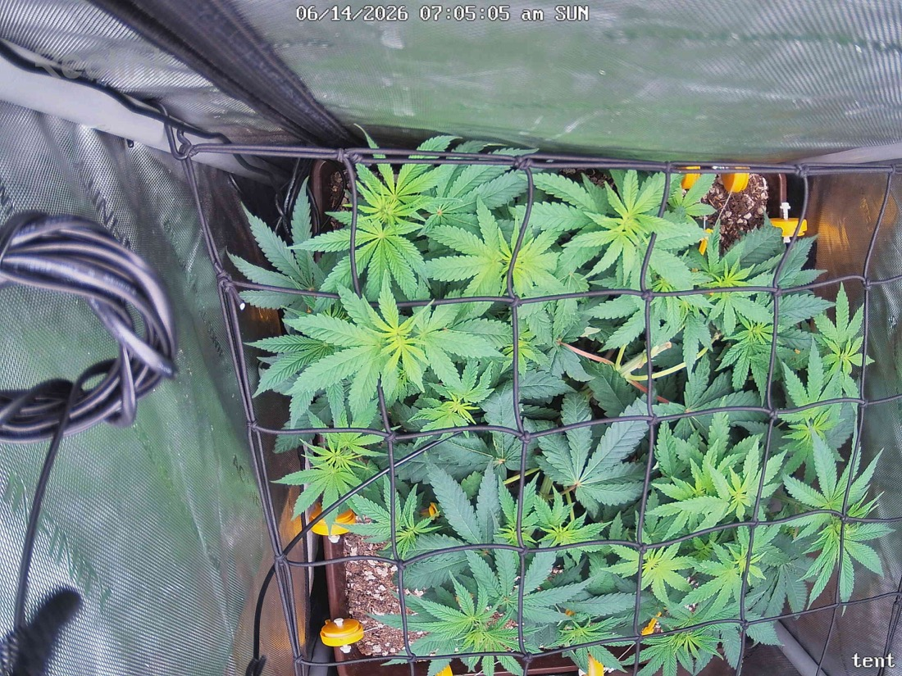

← All reports
Jun 14, 2026
Sun Jun 14, 2026 — 7:05 AM

Prognosis
Here's the day-over-day read:
- Net/scrog is in: The biggest visible change — the trellis netting you added 6/13 is now installed and the colas are being trained through the squares. Canopy looks more spread and evenly leveled than yesterday's mound.
- Defoliation took: Bottom/tent-touching leaves are noticeably cleaned up vs. 6/13. Canopy is more open, better airflow underneath — exactly what you want with mites in the picture.
- Color/posture: Leaves are flat, deep green, healthy turgor. No tacoing, no clawing, no drooping, no edge burn or tip burn. Couple of older lower leaves show slight pale/yellow (the one drooping yellow leaf center-frame) — normal senescence from the defol/lower canopy, not a deficiency pattern.
- Mite check: No visible webbing, stippling, or fresh damage on the leaf surfaces shown. Second Green Cleaner round went on at lights-out 6/13, so you're mid-cycle on treatment — keep to the every-3-day cadence (next ~6/16).
- Phase check: Germinated 4/28, flipped to 12/12 on 6/3 — so ~11 days into flower. You should be in the stretch/transition phase, and the structure (multiple even colas spreading into the net) is right on track. Pistil/bud-site formation at the nodes should be starting to show in close-ups soon.
- No PPFD/light stress at your current ~600. Canopy is flat and dark green, no bleaching on the tops nearest the light.
Suggested next actions:
- No action needed today beyond staying the course: tuck new growth into the net as it stretches, hold the Green Cleaner schedule (next round ~6/16), and keep inspecting undersides each spray.
- Next water is due ~6/16 (last bottom-water 6/12) — check soil weight before pouring.
Overall: Healthy, vigorous plant ~11 days into flower; scrog + defol are dialed in and the mite program is on schedule — no stress signs, looking good.